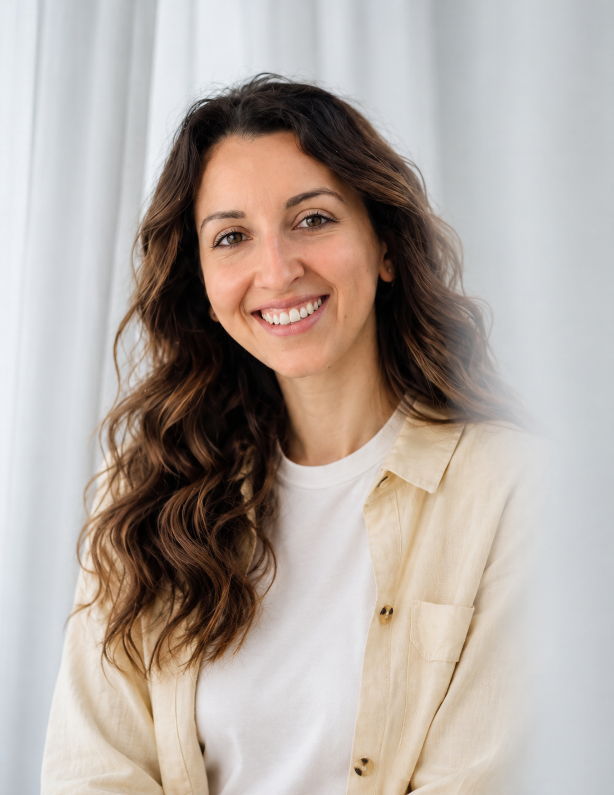
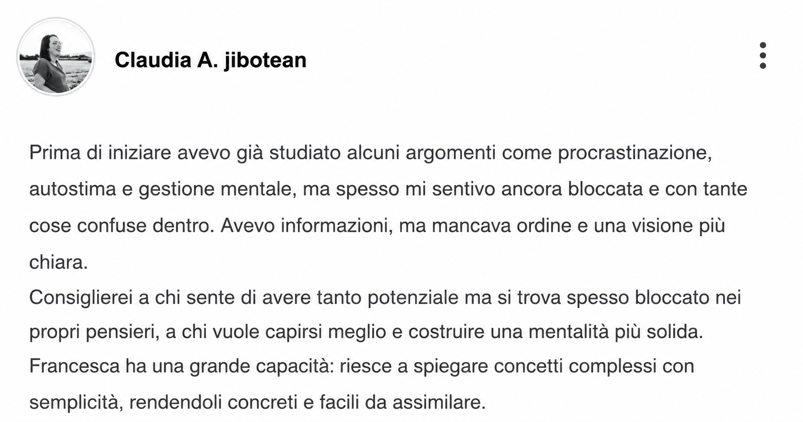
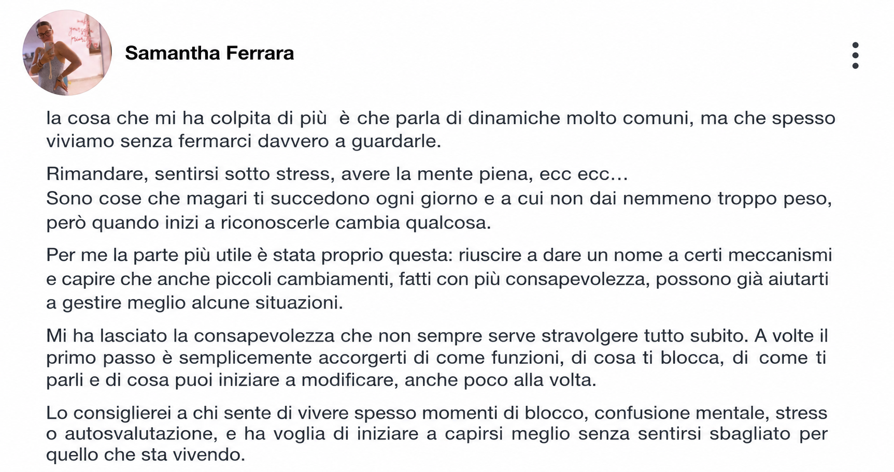
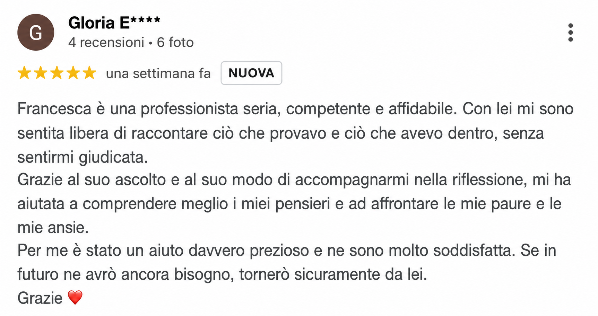

Consulenza gratuita
Prenota una chiamata conoscitiva. Capiamo insieme da dove parti, quali sono i pensieri che ti tengono bloccato e valutiamo se questo percorso è davvero la soluzione adatta alla tua situazione.
Non devi continuare a sentirti bloccato. Ti aiuto a fare chiarezza su ciò che desideri, comprendere le paure e i pensieri che ti frenano e iniziare a costruire un cambiamento concreto, un passo alla volta.
PRENOTA LA CONSULENZA GRATUITA →
Comprendere cosa vuoi
Riconoscere gli ostacoli
Passare all'azione
Un percorso di coaching 1:1 e affiancamento con accesso alla community F.G. Academy dove lavorerai su blocchi, paure e pensieri facendo azioni pratiche.
Prenota una chiamata conoscitiva. Capiamo insieme da dove parti, quali sono i pensieri che ti tengono bloccato e valutiamo se questo percorso è davvero la soluzione adatta alla tua situazione.
L'accesso completo a F.G. Academy si sblocca una volta iniziato il percorso, con tutte le risorse e gli strumenti dedicati. Puoi comunque richiedere fin da subito di entrare per un'anteprima gratuita della community.
Supporto giornaliero su WhatsApp ogni volta che ne senti la necessità. Oltre alle sessioni di coaching 1:1, lavoriamo fianco a fianco per affrontare le tue paure e mettere in pratica azioni concrete passo dopo passo.
Il mio percorso nasce da una forte passione per la crescita personale, lo studio della mente e i meccanismi che influenzano le nostre scelte.
Oggi metto queste competenze al servizio di chi vuole superare i propri blocchi mentali, gestire meglio il perfezionismo e trasformare gli obiettivi in azioni concrete.
Il mio approccio unisce consapevolezza, strumenti pratici ed empatia, lavorando sui propri schemi mentali, per costruire un cambiamento che non resti soltanto un'intenzione.



Il coaching si svolge online in videochiamata, in sessioni individuali settimanali. Lavoriamo su un obiettivo concreto, sui pensieri e sulle paure che ti frenano e sulle azioni pratiche da mettere in atto tra una sessione e l'altra.
Non esiste una durata uguale per tutti: il percorso è personalizzato in base alla tua situazione di partenza e ai traguardi che vogliamo raggiungere insieme. Ne parliamo durante la consulenza gratuita.
L'accesso completo a F.G. Academy si sblocca una volta iniziato il percorso individuale, dandoti accesso a tutti i materiali e ai percorsi riservati. Tuttavia, puoi richiedere fin da ora di entrare per un'anteprima gratuita: una volta confermata la tua richiesta, potrai esplorare la piattaforma, leggere le riflessioni, accedere alle risorse gratuite e partecipare alla community.
Cliccando su "Prenota la consulenza gratuita" si aprirà direttamente la chat su WhatsApp con me: potrai scrivermi per raccontarmi brevemente il tuo obiettivo e fissare insieme giorno e orario per la call conoscitiva gratuita di 30 minuti.